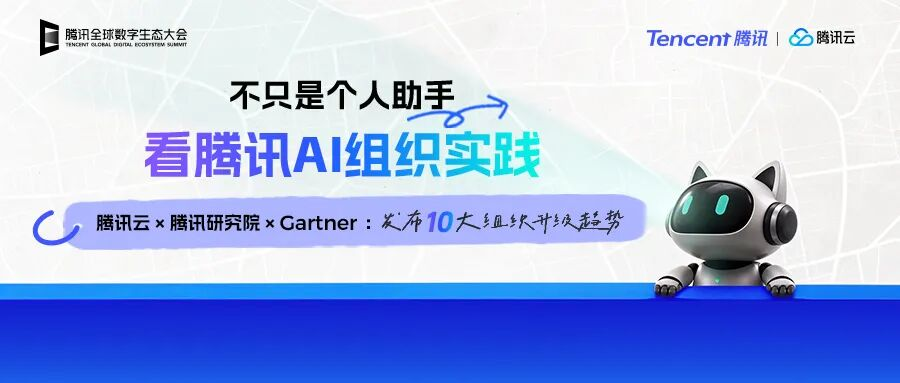
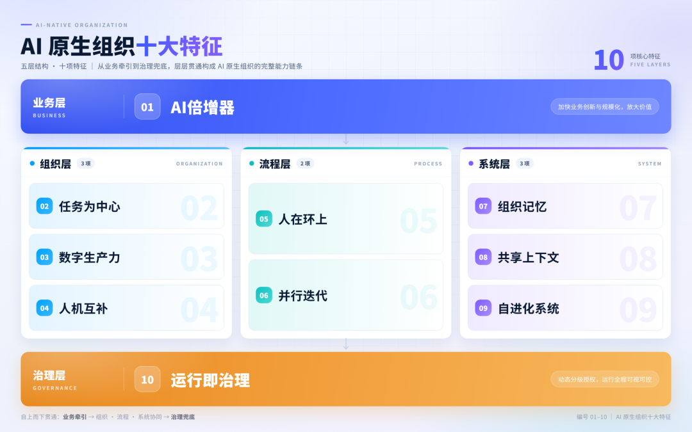
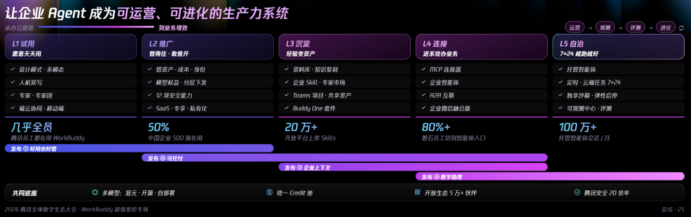
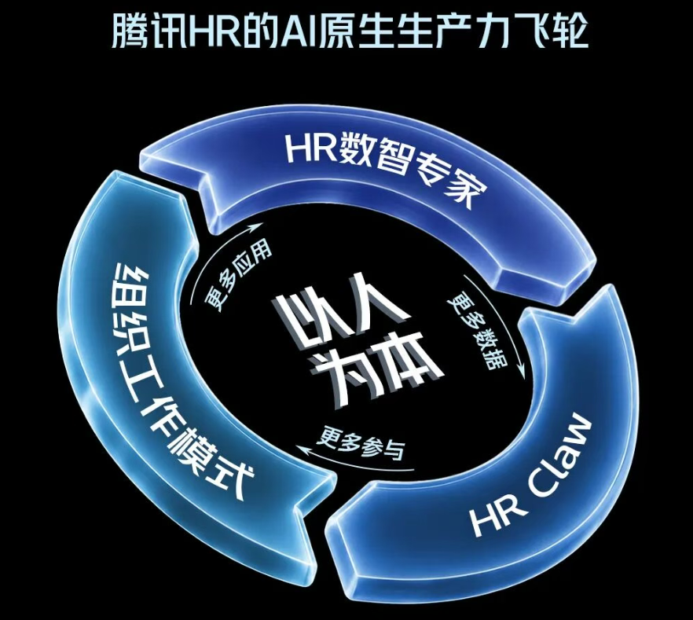
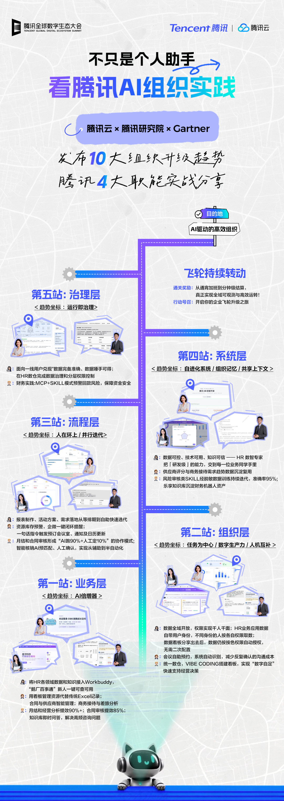

迈向AI原生组织：腾讯的探索样本
吴朋阳和季新苏把问题从「个人用上了 AI」推到「组织为什么还没赚到」。他们给了五层十个特征，再用 WorkBuddy 和腾讯 HR 讲大型企业可以怎么起步。
公众号原文 精读版（加密，全文） 导读约 25 分钟

作者栏第一位是吴朋阳，头衔写的是腾讯研究院专家。
第二位是季新苏，头衔写的是腾讯云里做产品策略的资深专家。
个人变快，还没有变成公司的利润
2026年的腾讯全球数字生态大会上，组织怎么改成了议题。WorkBuddy 专场的名字就叫超级组织。腾讯HR、财务和行政第一次单独开场，讲自己内部的试法。问题收成一句：AI 带来的产出，怎样从个人铺到整家公司。点到：行政等职。
海外也在找答案。OpenAI 写了《企业的未来》，把 AI 想成人类的助手、团队成员，或者协调层，并说分工可能因此改写。Anthropic 的创业手册从需求验证走到产品开发，再到规模化，主张用智能体流程撑日常，少让创始人时刻盯着。前提是先写清人机分工、权限和验收责任。
用得越深，个人速度和公司利润仍会错开。OpenAI 在 2026年9月给出样本：用量排前的 10%，每个活跃用户打出的 Token，是中段 10% 的 8.3倍；1月这个差距仅有 2.6倍。麦肯锡同年的问卷里，80% 的人觉得自己更快了，仅有 37% 觉得公司的息税前利润 EBIT 好了，和 2025年几乎一样。这两处数字是文内转述，未独立核实。
一个人用 AI 变快，不会自动变成公司赚到。分析可以先完成，后面仍可能卡在确认数据、协调和审批；产出变多，也可能加重复核和维护。旧岗位、旧流程、旧系统是按人来干活设计的。只加工具、不改分工，管理方式还是瓶颈。生产关系要跟上新的生产力，这是全文的起点。点到：后续仍可／原有岗位／流程和系／只增加工／不调整分。
十个目标状态分五层，每层配一个正在用的公司
老公司把人当生产力核心。文中反过来定义：AI 原生是把 AI 当成核心生产力，再按它能执行到什么程度，重做业务和运转方式。日常执行交给 AI，人改去盯目标、做创造、做价值判断，并负责协调和最后兜底。点到：人转向聚／协调与责。
以AI作为核心生产力，围绕其执行能力重新设计业务与运行方式的组织。
吴朋阳、季新苏，原文定义
变化被拆成五问：业务上创造什么，组织上怎样分工，流程上如何执行，系统上依据什么，治理上如何管控。十个目标状态铺开之后，作者提醒：现实里往往到不了终点，大多是先改一块。点到：可以从业／系统和治。

业务层只问一件事：AI 是不是被当成创造新价值的核心零件。
特征①被叫做 AI 倍增器，意思是用 AI 把创新和铺开的速度拉高，从而放大创造和交付。
老办法扩规模，往往得加人、加交付。新做法是把 AI 买进产品和服务本身，让创新、迭代和铺开变快。点到：迭代及规。
业务层拿多邻国当例子，看课程怎样被成倍做出来。
多邻国做在线学语言。以前新课靠人工，往往要拖好几年，供给起不来。2025年它宣布优先用 AI：生成式能力和共享课骨架、内部工具接在一起，先做能复用的底课，再改成别的语言；员工被流程推着用 AI，教研专家负责质量。2025年4月放出 148 门、以入门为主的新课，总量增加一倍以上。最早那 100 门大约花了 12年，这一批不到一年就上线。日语、韩语等 7 种热门非英语课，因此能给 28 种界面语言的用户使用。点到：重点将生。
组织层问的是：人和 AI 按任务怎么编组。
特征②叫任务为中心：按任务把人和 AI 混编，层级尽量压平。
特征③叫数字生产力：AI 不能只当工具，要能独自做完并交出结果。
特征④叫人机互补：能交给 AI 的先交出去，人留在它不擅长、又值钱的地方。
老组织按部门、按岗位派人，靠层级对齐。新组织按任务把人和 AI 配在一起，少让固定部门和层级挡住协作，同时改责任、培养人和激励。点到：并相应调／人才培养。
组织层的例子是 Moderna。
Moderna 要同时管 AI 和人手，2025年把 HR 与 IT 并成一个叫「人员与数字技术」的部门。人力和技术不再分开做预算，而是从目标倒推：技术如何支撑，哪些活必须人来。到 2026年，AI 智能体已经在供应链、IT、HR 里做信息整合、协调和一部分常规决定，人从琐事里抽身，处理复杂判断。内部服务 Ask HR 先接问题，再分给专业 GPT；反复出现的问题被用来改政策和说法。新岗位偏向设计、编排工作流，适应靠培训、实践和互相讲经验。早期少了来回协调，周期变短，跨领域的信息也让判断更稳。点到：哪些工作／并通过培／实践和经。
流程层问的是：AI 干活和人看着，怎样才不互相拖。
特征⑤叫人在环上：默认 AI 自己做，人负责看，必要的时候再插手。
特征⑥叫并行迭代：一件事可以多路由 AI 一起跑再汇合，流程也能跟着改。
老流程是人按固定步骤一个接一个，靠岗位交接。新流程让 AI 把能核对的活连续接住，人按风险看着，用并行和反馈把等待挤掉。
流程层的例子是 Stripe。
复杂代码库里，编码、测试、修缺陷会一直占住工程师。Stripe 做了无人值守的编码智能体 Minions：人在 Slack 丢出明确需求，它自己读材料、改代码、跑测试、交变更，中间不用人逐步点。好几个 Minions 各占一个开发环境，同时做不同的事，互不踩。失败的测试会自动打回去；还不行才给人；合并前仍要人审。2026年2月他们说，每周超过 1300个完全由 Minions 写出、审完再合并的变更。人从逐项执行，改成多件事并行，重点放在把关结果。这里的执行者是 AI。点到：测试和问／修改代码／运行测试／转向多项。
系统层问的是：AI 系统能不能自己学、自己变好。
特征⑦叫组织记忆：工作和经验要能写下来、取出来，变成下次还能用的资产。
特征⑧叫共享上下文：同一件事上，人和 AI 看同一份背景，才能实时对齐。
特征⑨叫自进化：系统自己学、自己迭代，用得越多越强。
老系统多半是记信息、帮人干活，经验和交接仍靠人。新系统把知识和经验收成人和 AI 都能调用的东西，目标、资料、进展实时同步，再按业务结果继续学、继续改。点到：传统系统／辅助人员／资料与进／改进系统。
系统层的例子是 Morgan Stanley。
Morgan Stanley 每天要在财务、风险、运营和交易几套系统里对损益，差额靠人逐条看。他们上了叫 FIXR 的对账智能体：读旧指引、看差额、给建议。人可以改建议，系统把处理方式记下来，反复用的做法变成以后的规则。一次处理既解决当场，也给下一次垫底。2026年6月的说法是：单本账从最长 6小时缩到 2—3小时，约 100 名财务每周合计大约少花 1500小时。经验因此变成可积累、可再用的系统能力。这是人和 AI 一起攒下来的。点到：运营与交／读取历史／分析差异／人的经验。
治理层问的是：AI 从头跑到尾，怎样仍然安全、可控。
特征⑩叫运行即治理：按任务给 AI 动态分级授权，跑的过程要看得见、拦得住。
老治理围着人的职责和制度。新治理把规则嵌进运行：看风险、看它有多自主，再分级授权；执行中用工具持续盯、及时干预，让过程可控，风险能预警，责任能追溯。对象是 AI。点到：风险可预／责任可追。
治理层拿微软做过往的例子，讲运行中的管控。
AI 能读数据、调工具、替人做事之后，风险不能只在上线前审一次。微软在 2026年重写了负责任 AI 的标准，底子是可靠、安全、隐私、透明和问责，并从开发管到日常：上线前估风险，高风险用途加防护；运行中管身份和工具权限，行为一直被看，有问题就干预、就改。写代码用 GitHub Copilot 时，也是分阶段放、人看着，并做安全防护。为了核对这些要求有没有落地，覆盖多项产品的管理体系过了 ISO，还接受外部审核。点到：AI开始／调用工具／以可靠安／隐私保护／也采取分。
收束的判断是：这种组织缺了 AI 就转不动，AI 成了不可少的生产力。比方是缺了电，多数现代工厂和企业开不了工。
先跑通一件高频任务，再沿五阶走到组织
往这个方向走，有两步要破。范围上，AI 的产出要从个人扩到整家公司。层次上，AI 要从主要帮人，变成主要自己执行。也就是融入 AI 工具，走向 AI 原生。
WorkBuddy 看企业客户的真实情况：多数公司不用第一天就改组织架构、重做业务流程、换掉 IT。可以从最高频、最日常、最重复的一件事做起，让 AI 先跑通、先产生价值，再扩散。关键是走出个人应用，变成大家一起建、一起用。他们把路径收成五阶：试用、推广、沉淀、连接和自治。点到：更换IT。
五阶依次是：试用，种子用户先做出可信结果；推广，从小圈子铺到全员；沉淀，把个人经验、skill 和公司上下文收成能分享的数字资产；连接，接上软件和系统，进入真实环境干活；自治，全天候跑，并且安全可控地工作。点到：个人的经／智能体能。
2026年这场大会上，WorkBuddy 企业版宣布了四项功能升级，用来撑企业级部署。
第一项是开放。系统打不通，WorkBuddy 就把平台往里接到企业微信和腾讯办公生态，往外兼容别的 IM 和公司系统，并接上主流模型，让 AI 在工作现场调用工具把事做完。
第二项是安全。公司担心 AI 风险，所以不敢放权。WorkBuddy 的方案是全链路：身份治理、权限管控、执行防护、数据安全和全程审计，做到行为可控、数据可管、过程可追溯。数据安全这块用了 AICC 机密计算。
第三项是可观测。AI 不好管，WorkBuddy 就给智能体加仪表盘：看它怎么跑，算清 Token 和积分，并按部门、按场景看 Token 花了多少，方便管成本。点到：掌握不同。
第四项是可托管。本地的 AI 很难一直在线。WorkBuddy 的托管智能体 WMA 把执行搬到云上，公司可以自己搭，再用 API 发到更多部门、系统和入口，让关键流程有 7×24小时的数字助理。点到：系统与业。
云上托管对内外部的公共服务尤其有用。腾讯内部用 WMA 做了经营服务智能体磐石小O，接了 ERP 里 300 多个业务接口。员工对话就能查销量、看业绩、走审批，每次都带上本人身份和权限，并留下审计。点到：员工可以。
WorkBuddy 这些升级，是把 AI 从个人工具变成组织生产力的底座。作者立刻补了一句限制：技术不会自己变成经营收益。还得在真实业务里改分工、打通流程，让验证过的成果继续被用。只有单点加速变成更快交付、更低成本或新价值，投入才有持续回报。

HR 用治理和共享平台，让一线把工具做成组织资产
腾讯上下都在试。不只业务部门，职能部门也在加快用 AI，想做一条生产力飞轮。方向已经朝原生偏，但离理想形态还远，更像大公司转型的真实进度。
职能部门里，HR 被当成大公司做 AI 改法的样本。它连着招聘、配置、绩效和培养，既服务员工，也参与能力建设。腾讯的 HR 动手早，推进又快又深：从零星应用走到企业级，孵化出数千个应用，并开始改专业团队和一线怎么配合。点到：HR连接／人员配置／绩效与培／腾讯HR／应用推进。
他们的抓手，是用 AI 共享平台把一线的创造力放出来，从而改 HR 的工作方式。
HR 长期夹在两头：集团必须把制度、口径和流程统一；各部门的盘点、培养、招聘又得贴着自己的业务。人才盘点时，一线不只要人员信息，还要加业务指标，并用负责人认的方式去讲。贴现场的需求，标准系统盖不住，只能等定制，或用表格和线下补。点到：集团需要。
HR 的 AI 也是先辅助、再自己造。早期多用于解析招聘材料、生成内容和智能填单。一线能写代码之后，新的墙出现了：应用部署不了，内部数据还得手工导入。人已经能创造，组织条件尚未跟上。
于是在已有的数据治理上做了 HRClaw：提供 HR 的数据、知识和技术服务，并让应用能发布、能管理、能共享。它和 WorkBuddy 这类通用 AI 接在一起，把以前要专业团队逐项插手的接入、认证和部署交给一线。变化从「帮你做完一件事」变成「你能造工具，而且成果能被组织再用」。点到：并支持应／管理与共。
七步里的第 1 步叫治理先行，先把已经数字化的家底变成可信、能用的基础。
HR 的数据涉及人员、薪酬和绩效。字段和口径不统一，分析就不可靠；管理范围不同，也不能整库打开。此前约两到三年，他们一直在统一定义和统计口径，并做分级分类和访问权限，好让 AI 接进来。接入面是上百张宽表、数千个字段，查询按业务定义走，不用人反复导出再拼接。点到：绩效等信。
能力开放时，权限仍卡在底层。查询按身份过滤到行、列，甚至单元格。同一个盘点应用分给不同管理者，智能体只返回他被允许看的，不会把他的权限传出去。接上 AI 之后，控制还延伸到选模型、保护敏感信息、检查外发和生产发布。治理既是安全，也是能规模化开放的前提：工具和方法可以共享，数据权限不必共享。点到：控制进一。
第 2 步叫系统集成，把组织能力变成一线叫得动的服务。
HRClaw 是被具体障碍逼出来的。有 HR 用 AI 做了活动应用，卡在部署，最后仍把代码交还研发。另一个人做了盘点工具，接不进内部数据和权限，只能手工填名单。所以平台要同时解决：有地方发布，能认出使用者，并在授权内连上真数据。
他们没有重做一套通用 AI 产品，而是把部署、取数、存储和组件封成可调用的技能和接口，接进 WorkBuddy。理解需求、写代码、调工具归 WorkBuddy；业务数据、专业知识和运行条件归 HRClaw。一线只问要解决什么，不必反复处理数据怎么接、应用放哪、谁能用。重心从交一个固定工具，转到撑很多工具的共享服务。点到：生成代码／谁能使用。
第 3 步叫业务创新，让一线那些不标准的需求直接做出来。
先被放开的，是长期排不上的差异：盘点要加部门指标，新人培养要接岗位和成长路径，招聘和文化活动的节奏也不一样。这些最贴现场，却往往因为用的人少、开发成本高，拿不到集中资源。AI 把成本降下来之后，一线可以把自己的理解直接做成工具，不必只能在标准系统外面用人工补。点到：却因使用。
盘点、校招工作台、新人成长平台和活动应用就这样冒出来。平台孵化了 3500 多个应用，CSIG 的新员工系统已有上千名新人在用。价值不只是旧需求更快，也包括以前排不上的想法开始被用。形式按场景选：固定看板可以让 AI 生成，再用接口刷新；操作更清楚的就留页面，不必全改成对话。能力要解决具体问题，值不值由使用决定。点到：人才盘点。
第 4 步叫流程优化，少一些逐级传递，让反馈直接推动交付。
一线拿到数据、知识和技术之后，一部分需求可以绕开老的接力。以前工具不好用，通常先告诉专业团队和共享服务，再变成技术需求，经过解释、评估和排期。现在人可以直接和 AI 一起做；要补平台能力，也可以围着真实场景和技术一起设计。提需求的人自己参与实现，转述、等待和反复确认都少了。点到：一线获得／减少了转／等待和重。
交付变成边生成、边看、边改。人定目标、加减功能、验收效果；AI 写代码、调工具、做技术实现。测试插件扫代码、模拟页面，把问题交回 AI 修，形成一小段自动修。平台也按反馈改自己：月度看板长期没人看就失效，于是改了环境回收规则；人分不清测试和生产入口，于是把看得见的入口收掉。改进既在协作里，也在平台迁就真实用法里。点到：交付过程／边预览／边调整／人定义目／增减功能／AI承担／工具调用。
第 5 步叫成果沉淀，让个人做出来的东西能被继承、能被再使用。点到：从个人产／可复用的。
能造工具之后，新问题是留不留得下。散在个人电脑里，别人找不到；以后改也可能找不到源码；人一调岗，更容易没人管。HRClaw 把生成和发布接上，应用和源码回到同一平台：市场负责被发现，版本、回滚和转交负责继续维护。点到：通过版本。
源码开放时，别人可以下载、修改、再部署，从而适配新部门。学习也有了对象：先看别人的应用怎么解决问题，再按自己的需要接着做。个人创造变成下一步的基础，而不再是一次性产物。从过程里再抽出经验，是延伸；但要变成可靠的组织知识，仍得写明适用条件、谁来审、怎么更新。把应用归到一处，不等于已经有了完整的组织记忆。点到：修改并部／审核和更。
第 6 步叫分工重构：专业团队去做公共能力，人的精力放在现场判断。
供给方式一变，专业团队的重心就变了。数据团队以前每月大约接 10—15个看板，后来这类需求几乎不再进旧流程，人转去做治理和质量。同期请求量约为上一年的三到四倍。要的数据更多了，却不再靠他们一个个做看板。一份基础能力撑住了更多需求。
研发也从接零散开发，转到封装可调用的技术服务。领域团队提供制度、规则和知识，并试着做数字专家。一线 HR 则在情境里定义问题、组合能力、判断效果。专业价值还在：同一份数据，处在不同阶段，变量怎么选、负责人真正关心什么、方案是否适用，都要现场判断，不能仅靠抄历史。点到：分析变量。
协作和培养一起改。HRClaw 按问题拉人，不同的人分别对接数据、知识和技术。面向一线则用真实任务、现场一起做、再答疑，帮他们把自己的应用做完。AI 拿走技术性执行；专业团队从替一线做工具，变成让一线有能力做。正式架构尚未因此推倒重来，但活已经换人在扛。点到：现场共创。
第 7 步叫渐进转型：用局部实践去推主干流程和管理机制。
一线自己造工具，也让主干和真实工作之间的断点更容易被看见。绩效为例：系统能发起活动、收回结果，中间收集材料、传达理念、沟通协调，仍有大量线下活在 HRBP 身上。下一步是从主干抽出可调用的能力，规则统一，组合交给一线。绩效流程已有局部试。AI 因此从改外围，伸到推主干。点到：中间的依。
还有没接上的地方。应用和源码回到了平台，新人的学习记录这类新数据尚未回到主干或数仓。成果怎么进评价，新协作怎么得到职责和责任安排，也还在找。眼下是旧主干和一线用 AI 共创并存：局部交付和分工变了，更完整的收益仍要等数据闭环和管理机制补上。
亮点被收成一个支点：用数据治理和共享基建，改掉「谁来做工具、谁来用」。专业团队做能持续调用的公共能力，一线把业务理解直接变成成果，平台再让成果被继承、被复用，初步转成员工、平台、AI 一起转的飞轮。HRClaw 把通用 AI 的创造力接进组织，使个人提速开始延伸为组织的交付、复用和协作。再连上主干、业务数据和评价，才可能走到更深的原生变革。点到：从这一基。

老公司也能原生，短中期多半是整体增强、局部原生
讲完趋势和内部实践，作者说还有一个 AI 争议可能没谈透。一种看法认为：只有大模型这几年新成立的团队才可能够格，传统公司可能做不成。
若从历史和现状一起看未来，结论未必这么绝。点到：现状展望。
第 1 点：AI 原生不是初创的专利，老公司也能打造。是否原生，不由出生决定，而由方法和想法决定。初创没有包袱、缺人缺资源，更容易一上来就这么做。老公司找对人、用对方法，也有可能建成或转成。历史上改成新时代物种的例子很多。Netflix 起先出租 DVD，10年后变成在线视频，今天做内容。三星起先做农产品贸易，30年后做电子，今天是数码和半导体巨头。Nokia 起先是木浆厂，100 多年后做成全球第一的手机制造商。点到：没有历史。
第 2 点：拉长看，这种组织会变成主流，不变就会被淘汰。新生产力改的不只是效率，而是竞争标准。电是参照：今天用电本身不是优势，却是开工条件，用电的都可以看成电力原生，不用电的至少在发达市场已经消失，创新大多长在各种电器上。AI 更可靠、更便宜之后，也可能从优势变成门槛。先转的公司若能以更低成本、更快速度给出同等甚至更好的东西，客户对价格、质量和交付的预期就会改。还靠旧办法的，就算还在运转，也可能拿不出有竞争力的产品。点到：未来长期／客户的价。
第 3 点：这种变革难以一次到位。短中期里，多数老公司可能是整家先被增强、只有局部真正原生。工具上得快，数据、流程和权责很难一起到位。成熟的流程可以先闭环，其余仍靠人。早期工厂换了电动机，传动轴和皮带还留着，新动力和旧布局共存过。要减的是无效汇报和重复交接，不是只砍人数和层级。Klarna 裁过员、冻过招聘，AI 客服放大后承认服务质量受损，又把人工加回来。别的互联网公司也有类似报道。混合不等于没做完，原生也不等于取消岗位。Anthropic 的 Claude Code 已把 AI 编程当默认，人随任务流动，经理还在，产品经理、设计师和安全专家做关键判断。方式变了，分工和责任还在。点到：短中期大／局部AI／却继续沿／皮带和原。

文末还指向两篇腾讯研究院的调研
文末推荐腾讯研究院的一篇调研，问超级个体的产能怎样变成组织能力，栏目叫 AI 跃迁者。
另一篇同样出自腾讯研究院的 AI 跃迁者调研，把理想组织说成由 AI Agent 来组织人。
哪些话是腾讯自己说的，哪些只是文内转述
这篇是腾讯研究院和腾讯云的产品叙事，不是独立审计。OpenAI《企业的未来》、麦肯锡调查里的数字，以及多邻国、Moderna、Stripe、Morgan Stanley、微软、Klarna、Anthropic、Netflix、三星、Nokia 等海外例子，都是文内转述，本页未独立核实。
WorkBuddy、HRClaw、磐石小O，以及 3500 多个应用、300 多个接口这些规模，是腾讯自述。
原文还有一张约 1KB 的占位图和文末疑似二维码，没有收录。Gartner 出现在封面和总览海报的署名里，正文没有展开它的判断。